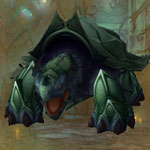
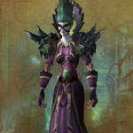
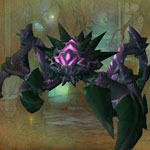
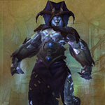
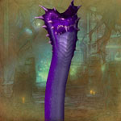

You can find the Blackfathom Deeps dungeon within Ashenvale, Kalimdor.
The coordinates are (13.8,15.1)


Route:
Map 1Map 2Map 3
At start jump over broken platforms. If a player drops the Coiled Rope rest of you can swim over to that.

Underwater boss Guardian of the Deep can be reached faster by swimming to a pile of ‘Guardian Eggs’. Click one & you’ll gain increased swim speed by 75%.


Bosses:
1. Ghamoo-Ra2. Domina3. Subjugator Kor'ul4. Thruk5. Executioner Gore0. Guardian of the Deep (optional boss)6. Twilight Lord Bathiel7. Aku'mai the Devourer

Quick Boss Tactics:/i Move out way of lightning pool on ground, spins around then charges forward. Hits random targets with static during fight.

Quick Boss Tactics:/i Avoid standing in Maw of Death (purple line on floor). Run away from Foul Tempest (hit with green bolts).
Quick Boss Tactics:
/i Grabs a player with Leviathan’s Grip. Summons tentacles to hit ground (move out of the crumbling floor).
/i Grabs a player with Leviathan’s Grip. Summons tentacles to hit ground (move out of the crumbling floor).
Quick Boss Tactics:
/i Pulls in & roots a player in a fishing net. Casts Fillet of Flesh smashing the ground around him, move away.
/i Pulls in & roots a player in a fishing net. Casts Fillet of Flesh smashing the ground around him, move away.
Quick Boss Tactics:
/i Strikes the floor, move out of purple line. Avoid standing in the purple circles left on ground. Devouring Blackness grabs a player draining their health, interrupt this.
/i Strikes the floor, move out of purple line. Avoid standing in the purple circles left on ground. Devouring Blackness grabs a player draining their health, interrupt this.

Quick Boss Tactics:/i Does aoe damage with Shattering Song (circle echoes out). Spore Cloud summons adds. Heals himself when eats a Blue Shale Crawler.

Quick Boss Tactics:/i Restorative Waters summons adds then boss absorbs them to heal, kill what you can. Run away from Piercing Rain, ice shards fall & follow enemies.

Quick Boss Tactics:/i Move around to avoid damage from falling rocks. Tearing the Void summons tenticles to hit ground (move out of the crumbling floor).